Building a generation + cloning pipeline for websites — datasets, graders, evaluation metrics, and animations — wired through Harbor, Claude Code, and Modal.
First passes after watching the Harbor video — figuring out where my work needed to focus.
Generate a website based on a list of given requirements:
{
"Type" : "Social Media"
"Topic" : "finance",
"button_density" : "0.8",
"corner_pointyness" : "0.3",
}
Can randomly create multiple JSON descriptions of files using an RNG → these JSON descriptions contain some fixed fields and some temperature-like knobs and dials which forces AI to diverse samples instead of making all similar websites.
Turned the idea into a real Harbor task — generating the dataset of websites end-to-end.
Created a harbor task with the above idea, a gen.py is called on environment setup which creates the json — the resulting json is fed to claude_code with the instructions.md to create the website. The verifier is a dummy which always gives score=1.0, but it converts the html files to screenshots by using playwright chromium. Multiple trials of this same task will generate different looking websites. (run with -k 20 for 20 websites.)
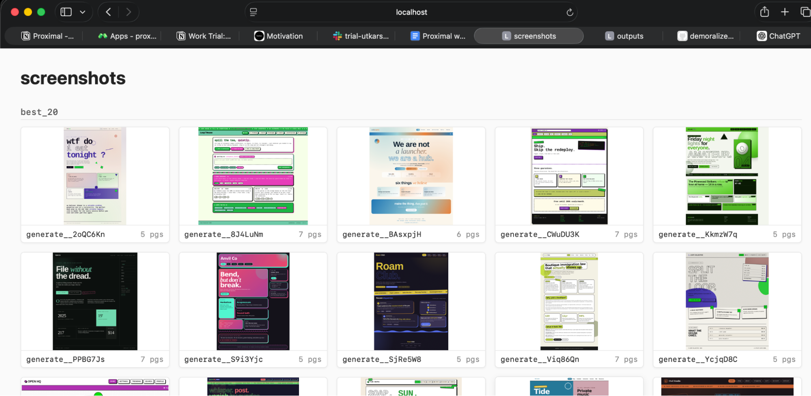
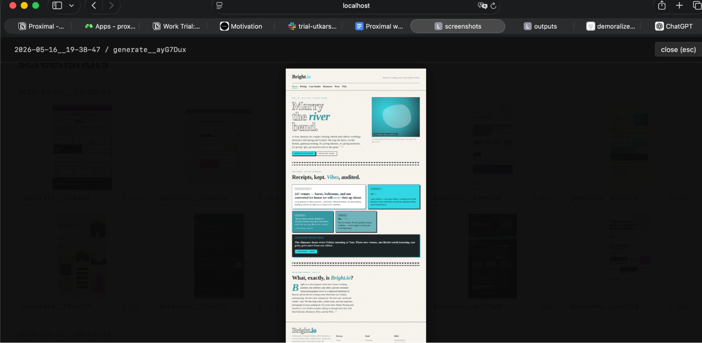
One template task, many stamped instances — one per generated website.
Need to create multiple clone tasks → once for each of the generated websites. So I just created a template-task which is like a boilerplate — then a script run_tasks basically manages everything; it uses the template to create multiple tasks and runs them all on Modal.
evaluators in the repo, and also evaluator_task to run in parallel on Modal) → and I realized that "websight" is the metric that is closest to my human perception. Used it to compare 2 screenshots → the final score of the entire website is just the mean of the scores from all the individual pages.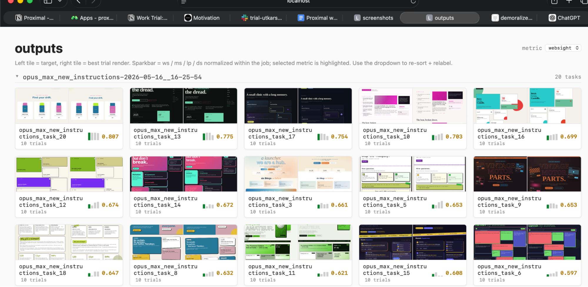
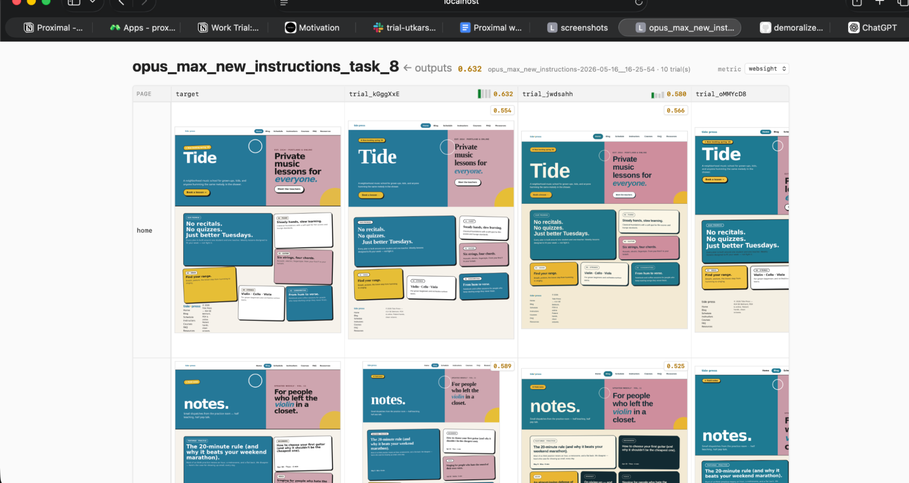
I noticed that the environment setup was taking too long because it was downloading Playwright and Chromium and other dependencies every time, so instead I created a custom dockerfile.base to ensure the environment setup is quick.
To increase the complexity of tasks — I added multiple knobs and dials to control the probability of complicated elements on the page:
shape_geometric_decoration element_rotation shape_organic overlap_density container_escape grid_break
…these lead to unique, diverse and complicated tasks for claude_code.
From "the metric Claude suggested" to one grounded in research and my own intuition.
I initially didn't know a lot about screenshot similarity metrics, so I went with one that Claude suggested (Websight).
Later I found a research paper regarding this:
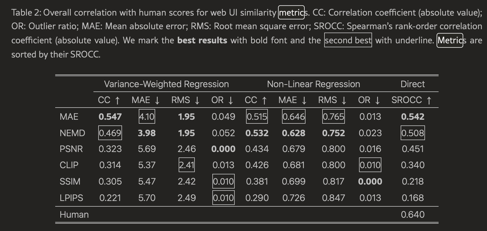
Didn't have enough time to actually understand every metric, so I asked Claude to implement and compare all of them (I already had the code in a way that it was easy to plug this into the existing pipeline):
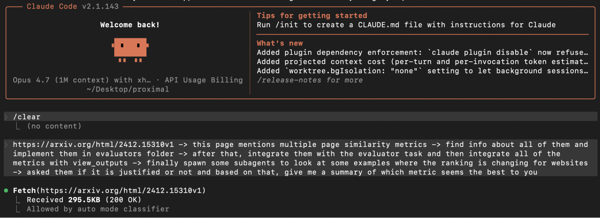
This helped me fast-track my research.
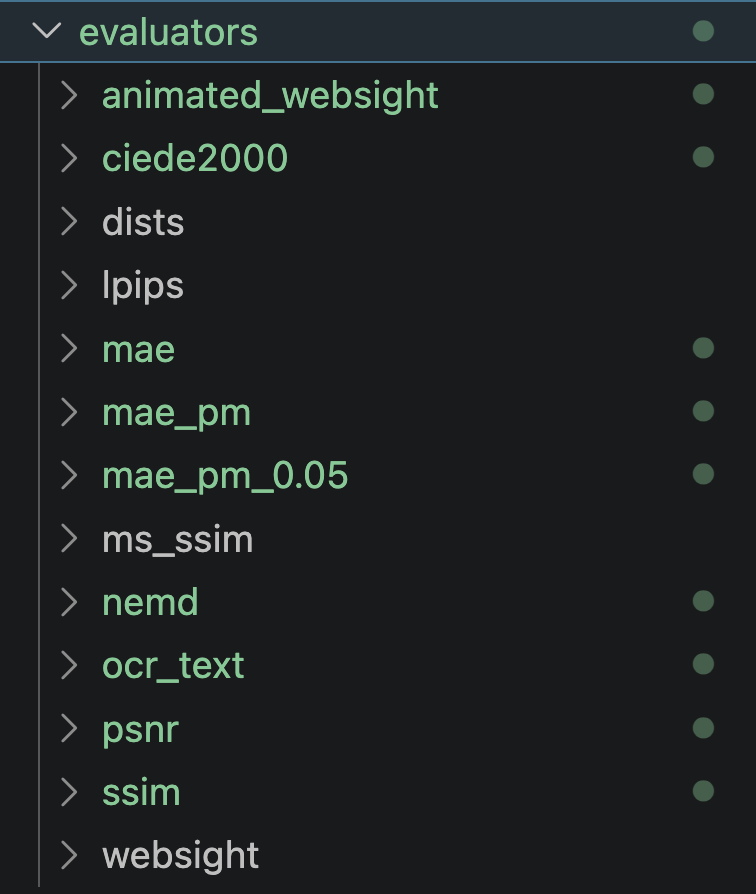
Based on the results from research, upon manually inspecting — it seems that MAE (Mean Absolute Error) is the metric which is closest to my human intuition. Here's an example to justify that:
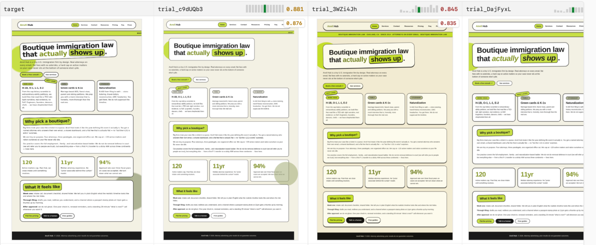
With MAE this is the ranking of runs on these trials — these are the top 3 trials (leftmost is the target).
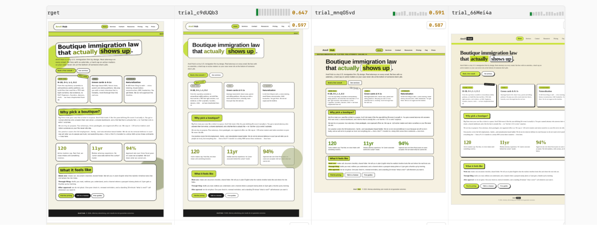
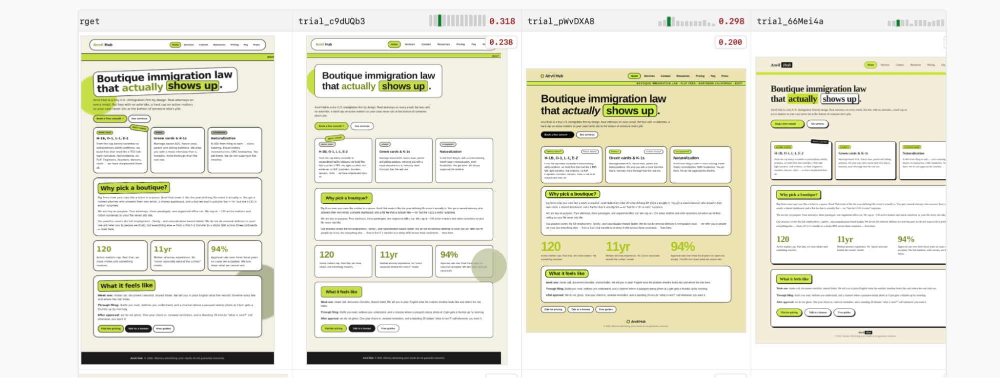
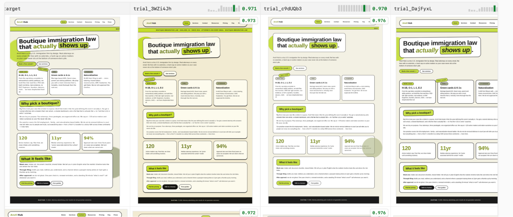
NEMD is a close second but I didn't choose it for the final metric because it was giving scores like 97% to the above examples which seems pretty generous. MAE's 88% score intuitively suggests more scope for improvement which is definitely there.
Another thing that I saw while looking at the results manually → taking the mean over multiple pages seems to "forgive" one bad page. In fact, many times, sparse or un-complicated pages tend to help the website "win".
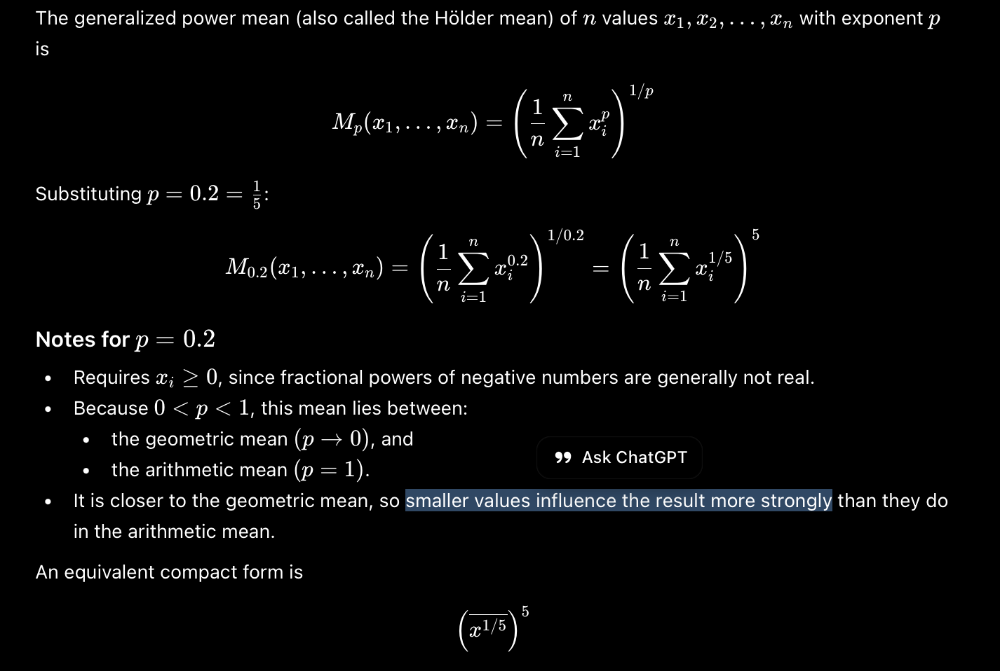
mae_pm_0.05 → MAE per page, then taking a generalized power mean with power 0.05 across pages.
After the static HTML+CSS clone pipeline was working end-to-end, I started on the animation bonus task.
gen.py + knobs-and-dials approach but in the instructions, I asked it to use animations.t = 0.0, 0.5, 1.0, 1.5, 2.0, 2.5s from first paint, plus a continuous WebM recording of the full 3s window.run_tasks has an ANIMATED=1 flag that swaps the template to use clone_animated_template task./app/pages/<slug>.html per slug.Inspect_results (view_screenshots and view_outputs) picks up the animated layout automatically → per-slug comparison views instead of flat png pairs.pm_0.05.ANIMATED=1 in the env vars.